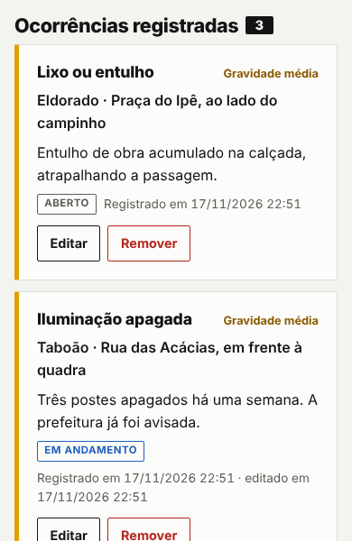

O que está quebrado no seu bairro?
Buraco na rua, poste apagado, entulho na calçada. Registre aqui e acompanhe até a prefeitura resolver.

O problema
Hoje a reclamação vai para o grupo do WhatsApp e se perde. O ZelaBairro junta os relatos por tipo, bairro e gravidade, sem cadastro.
+40% de mensagens às ouvidorias públicas do Grande ABC em 2025, comparado a 2024, com zeladoria e iluminação entre as principais reclamações (Diário do Grande ABC).
Como funciona
Relate
Escolha o tipo (buraco, poste apagado, lixo, calçada ou árvore), o bairro e um ponto de referência. Não pedimos nome, CPF nem telefone.
Acompanhe
Cada relato mostra o status: aberto, em andamento ou resolvido. Dá para editar ou remover quando precisar.
Priorize
A gravidade informada ajuda a prefeitura a decidir o que resolver primeiro.